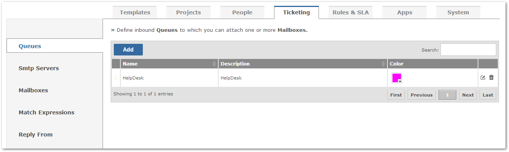
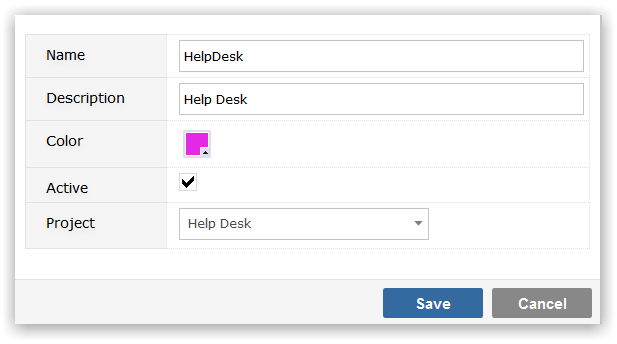

Establishing Inbound Queues
Queues exist at the highest level of email processing in Breeze. They are aggregators of emails from one or more Mailboxes.

To create a Queue click on the Add button.

- Name: the name you wish to give the Queue
- Description: description of the queue
- Color: color by which the Queue will be known
- Active: checkbox that allows you to easily activate and deactivate a Queue
- Project: default project that items processed by this Queue will be added to